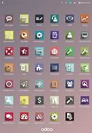

Fondateur : Fabien Pinckaers 2005 : Création de TinyERP, un logiciel Open Source. 2008 : TinyERP se transforme en OpenERP! - La communauté s'agrandit autour du logiciel - Les modules sont de plus en plus nombreux Fabien Pinckaers commence alors à embaucher du personnel La poursuite de son ascension est possible avec la levé de millions de dollars 2020 : Aujourd'hui Odoo est le software de gestion le plus installé au monde Des chiffres clés : 4 500 000 d'utilisateurs 2 550 partenaires
Avec un code source accessible au public, il est possible de modifier des fonctionnalités ou d'en ajouter à souhait.
La communauté autour d'Odoo grandit d'années en années et permet d'alimenter l'outil. Avec ces nombreuses possibilités de "customisation" il est facile de mettre en place Odoo dans de nombreux secteurs d'activité.
15 ans déjà !
Odoo a déjà 15 ans ! Les avantages de choisir ce type d'outil sont nombreux :
1 - Centralisation des informations
2 - Obtention des données en temps réel
3 - Regroupement d'informations communes et homogènes
4 - Limitation des risques d'erreurs notamment à cause de la ressaisie et de la duplication de données
Avec Odoo, nous vous assurons un gain de temps et un gain de productivité!
Odoo est l'outil ERP(Enterprise Resource Planning ou planification des ressources d’entreprise) le plus polyvalent qui vous aide dans la gestion de votre entreprise. Il est personnalisable avec ses nombreux modules et s'ajuste à toute sorte de structures
